Znalazłeś/aś moją małą stronkę o mojej ulubionej bohaterce z gier: Niko!
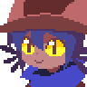
Niko to protagonistka gry OneShot.
Jest dzieckiem z niebieskimi włosami oraz trzema "wąsikami" wystającymi z boków, ma żółte oczy oraz opaloną skórę. Ubrana jest w za duży, brązowy płaszcz, niebieski szalik oraz brązową czapkę z kocimi uszami. Jej zadaniem w grze jest ocalenie świata poprzez zwrócenie słońca (żarówki) na swoje miejsce. Dodatkowo uwielbia naleśniki. Bardzo. Szczególnie takie z orzechami, a najlepiej jeżeli jej mama je robi.
Jest dzieckiem z niebieskimi włosami oraz trzema "wąsikami" wystającymi z boków, ma żółte oczy oraz opaloną skórę. Ubrana jest w za duży, brązowy płaszcz, niebieski szalik oraz brązową czapkę z kocimi uszami. Jej zadaniem w grze jest ocalenie świata poprzez zwrócenie słońca (żarówki) na swoje miejsce. Dodatkowo uwielbia naleśniki. Bardzo. Szczególnie takie z orzechami, a najlepiej jeżeli jej mama je robi.
Grę OneShot poznałem około 2020, a pierwszy raz zagrałem podajrze w 2022.
Od tamtej pory jest to moja ulubiona gra fabularna, ponieważ jak żadna inna do tej pory, potrafiła mnie głęboko wzruszyć.
Jeżeli znałbyś/znałabyś mnie osobiście to byłoby ci wiadome, że nie potrafię się zamknąć zapytany o tą grę lub o Niko.
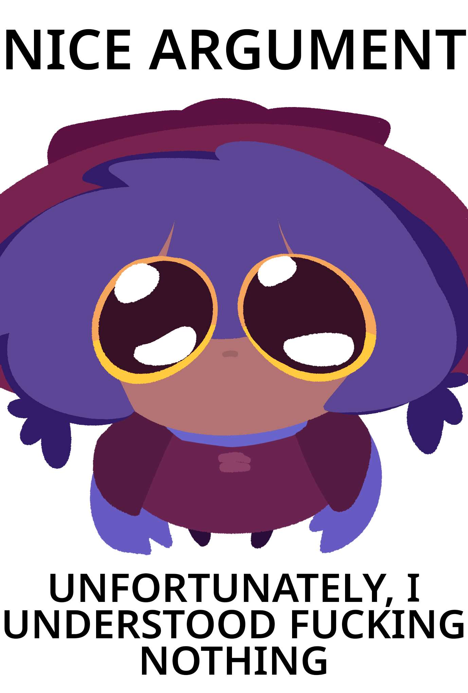
Mój pluszak Niko
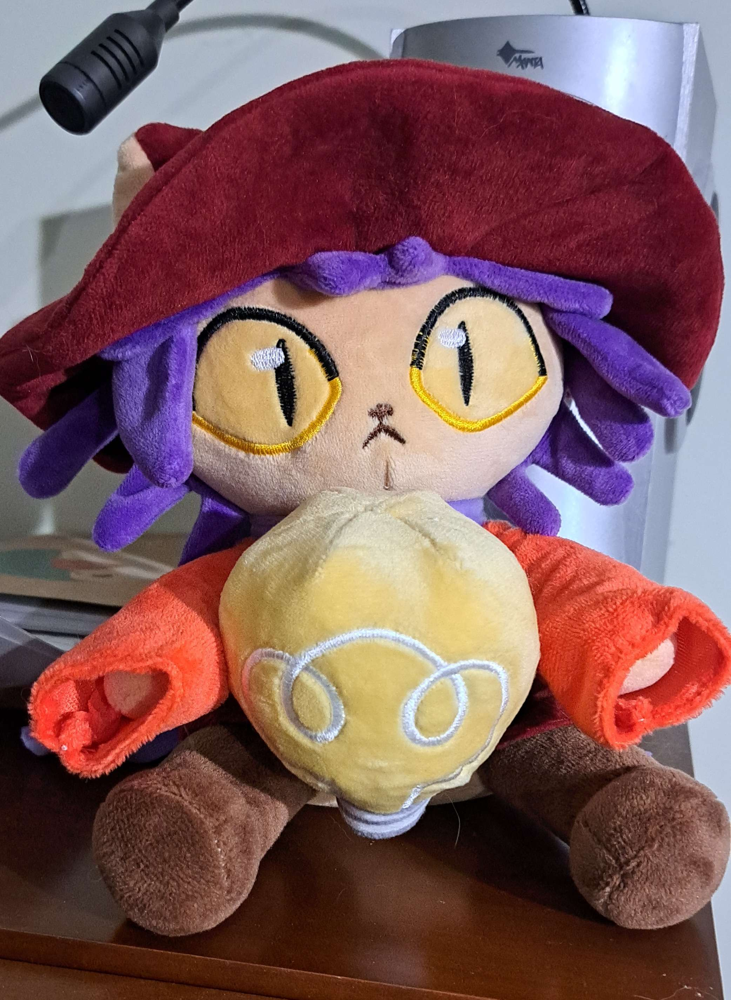
GALERIA
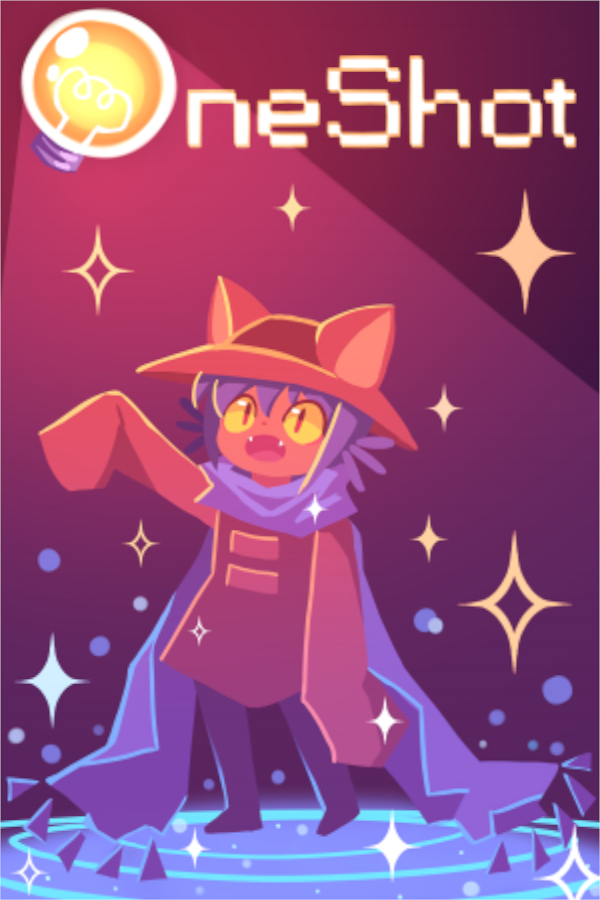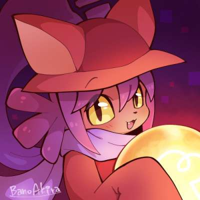
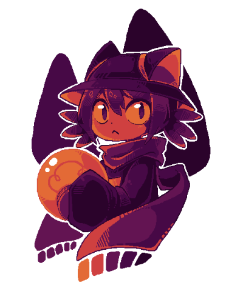
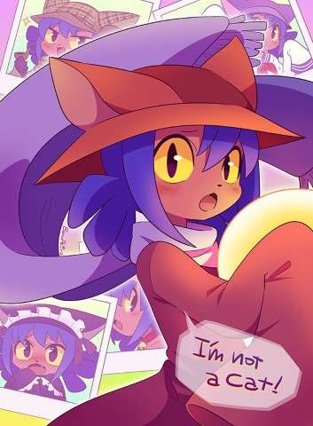
Niko to NIE JEST KOT!!!! to jest oficjalnie potwierdzone: https://oneshot.fandom.com/wiki/Niko#Trivia
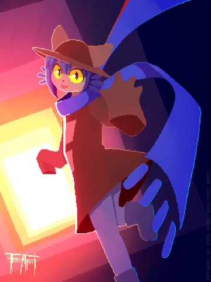
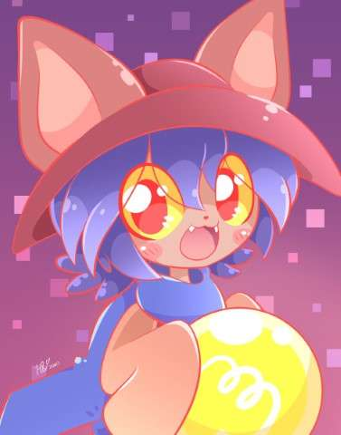
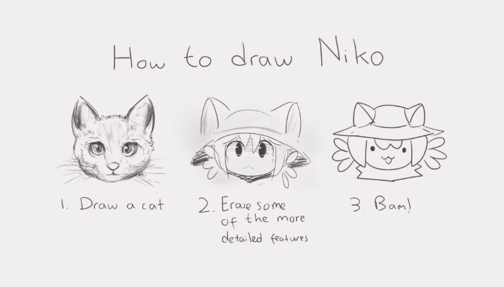
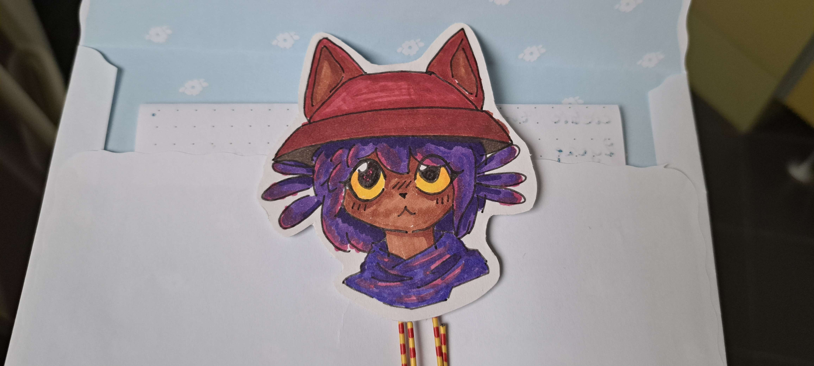
Obrazek powyżej: prezent na urodziny od koleżanki.
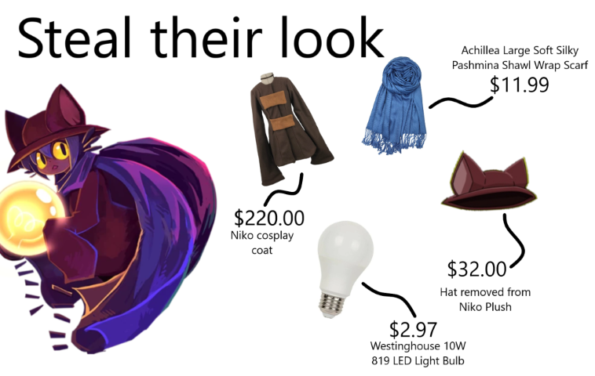
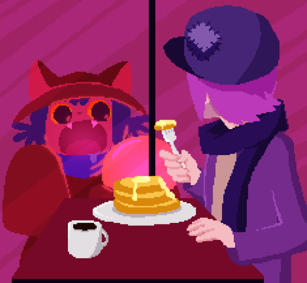
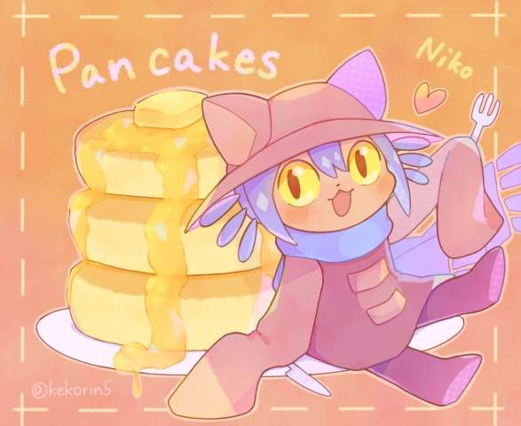

Dwa obrazki powyżej to prezent od koleżanki używany przeze mnie jako pfp, oraz jego wersja świąteczna.
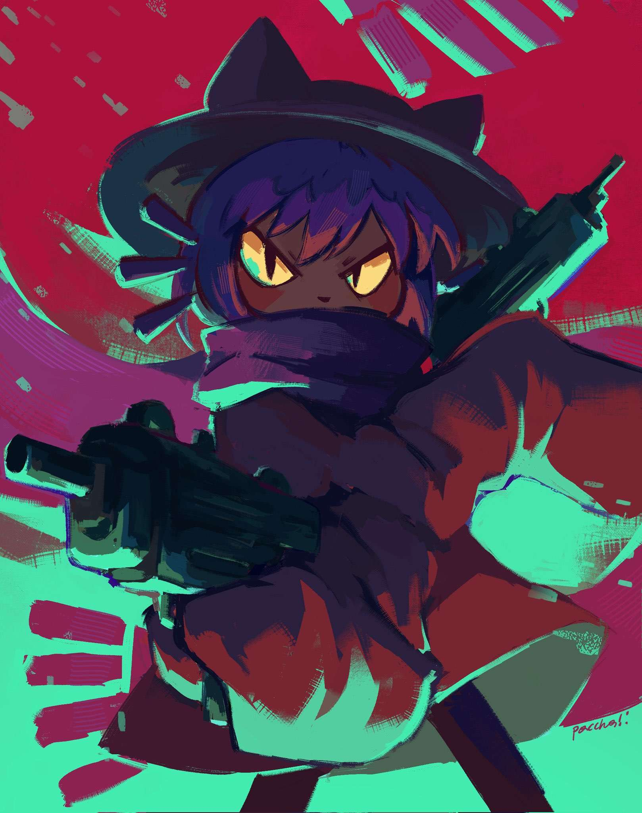